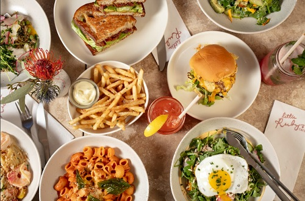
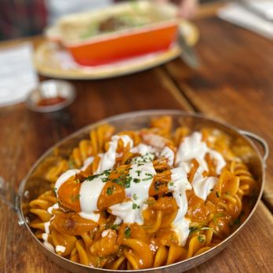
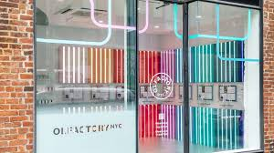
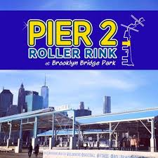

What I Like To Do in NYC
NYC Food
 There's so many restaurants in NYC and one of my favorite activities to do is eat with my friends. Two of my favorite places to eat are Little Ruby's Cafe and Piccola Cucina.
- Little Ruby's Cafe
Little Ruby's is well-known for its brunch menu, and one of my favorite dishes is the shrimp pasta. The flavors are fresh and vibrant, making it a standout choice. It's always a treat whenever I go, and the cozy atmosphere adds to the overall experience.
West Village Location - Piccola Cucina
I love Italian food, and this place had some really delicious pasta. The calamari appetizer was a pleasant surprise—crispy, tender, and full of flavor. It ended up being one of the highlights of the meal, adding to the overall great dining experience.
Soho Location
NYC Activities
 Aside from eating out, there are plenty of other activities I enjoy doing with my friends in the city. For example, I've tried creating my own perfume and have also gone roller skating.
- Olfactory NYC
Here, there are so many scents to choose from, and the experience is highly customizable. You can mix and match different fragrances to create something unique. It's definitely a fun activity to do with friends, as you can experiment together and share your creations.
- Pier 2 Roller Skate Rink
My first time roller skating was at Pier 2 in Brooklyn. At first, it felt really intimidating, as I struggled to find my balance and get comfortable on the skates. However, by the end, I started to get the hang of it and felt more confident. It turned out to be a fun experience, and I'd love to go back and improve my skills.